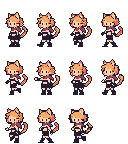

고양이 도적 · 입장부터 병 든 퇴장까지
같은32×48과 지정5색. 주황 머리·고양이 귀·꼬리, 붉은 목도리와 검은 의상을 유지했습니다.
테두리·눈·검은 의상피부주황 머리·귀·꼬리밝은 주황붉은 목도리
불러오는 중
입장 → 호흡·깜빡임을 하는 대기 → 물약 받기 → 병을 든 퇴장.
퇴장할 때 머리·귀·목도리·몸·꼬리를 함께 돌리고 병을 실제 손 접점에 유지합니다.
움직임·병 접점 확대 · 6배
호흡·깜빡임과 주황 머리·양쪽 귀·꼬리 움직임을 함께 확인합니다. 귀와 꼬리의 연결부, 두 눈과 병 접점을 유지합니다.
위 장면은 공통3배, 이 칸은 검사용6배입니다.
기존7포즈 + 병 들고 걷기4포즈

다른 캐릭터와 같은 배율